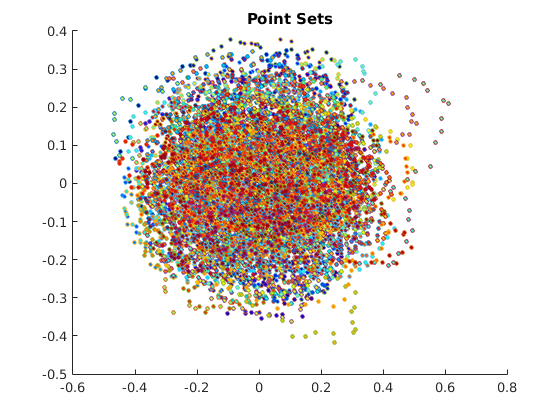
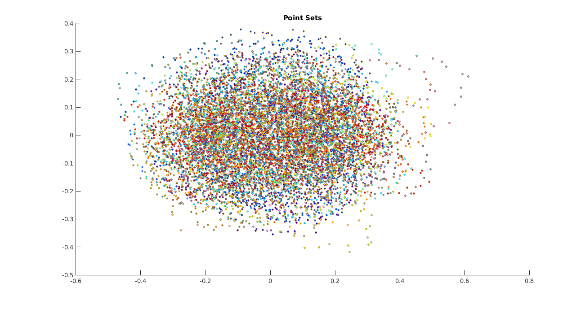
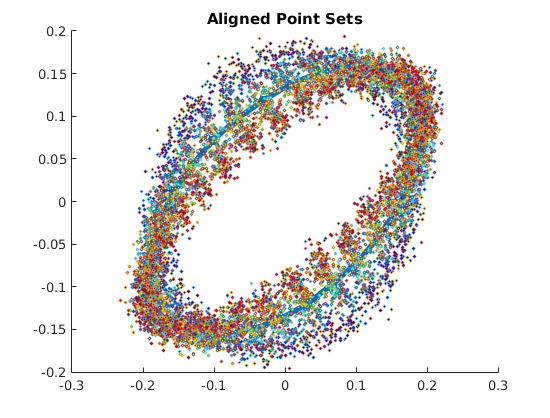
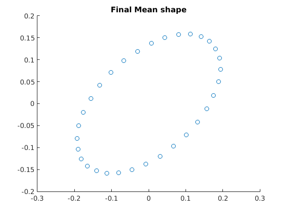
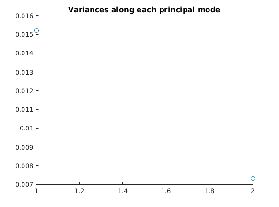
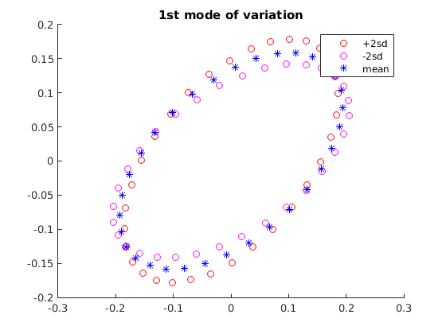
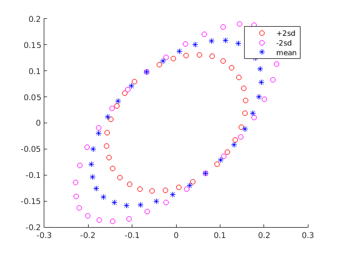

Contents
% Shape analysis clc clear; close all;
Loading data
load('../data/assignmentShapeAnalysis.mat');
numPoints = size(pointSets,2);
numSets = size(pointSets,3);
Transforming each pointset to pre-shape space
centroids = sum(pointSets,2)/numPoints; temp = repmat(centroids,1,32,1); preshapePointSets = pointSets-temp; l2_norms = sqrt(sum(sum(preshapePointSets.^2,2),1)); temp = repmat(l2_norms,2,32,1); preshapePointSets = preshapePointSets./temp;
Checking point sets
% ps1 = pointSets(:,:,1); % ps1_reshaped = preshapePointSets(:,:,1); % % figure(); % scatter(ps1(1,:),ps1(2,:),'r+'); % hold on % scatter(ps1_reshaped(1,:),ps1_reshaped(2,:),'b+'); % hold off
Plotting intial point sets
color_list=jet(numSets); figure(1); hold on; title('Point Sets'); for i=1:numSets scatter(pointSets(1,:,i),pointSets(2,:,i),8,'MarkerFaceColor',color_list(i,:)); end hold off
Mean shape calculation
using a random point set as the mean initialization
initIndex = unidrnd(numSets,1); mean = preshapePointSets(:,:,initIndex); newMean = mean; % params for iteration diffThreshold = 1e-6; maxIters = 25; iter = 1; diff = 1e3; while(diff>diffThreshold && iter<maxIters) mean = newMean; for i=1:numSets R = procrustes(mean,preshapePointSets(:,:,i)); preshapePointSets(:,:,i) = R*preshapePointSets(:,:,i); end % Finding optimal mean shape within each iteration newMean = sum(preshapePointSets,3)/numSets; % normalizing mean to bring it into preshape space; centroid already at % origin l2_norm = sqrt(sumsqr(newMean)); newMean = newMean./l2_norm; % calculate the difference between the means diff = sqrt(sumsqr(mean-newMean)); % disp(diff); iter = iter+1; end
Plotting aligned point sets
color_list=jet(numSets); figure(2); hold on; % scatter(mean(1,:),mean(2,:),16,'MarkerFaceColor',[0 0 0]); plot(mean(1,:),mean(2,:),'-x','LineWidth',4,'Marker','*'); for i=1:numSets scatter(preshapePointSets(1,:,i),preshapePointSets(2,:,i),... 4,'MarkerFaceColor',color_list(i,:)); end title('Aligned Point Sets'); hold off xl = xlim; yl = ylim; figure(3) scatter(mean(1,:),mean(2,:)); xlim(xl); ylim(yl); title('Final Mean shape');  
Computing principal modes of variation
cov = 0; % mean subtracted vectorized points for i=1:numSets pointSet = preshapePointSets(:,:,i) - mean; cov = cov + pointSet*pointSet'; end cov = cov/numSets; % Eigenvalue decomposition [V,D] = eig(cov); eigenvals = diag(D); figure(4) scatter(1:length(eigenvals),eigenvals(end:-1:1)); title('Variances along each principal mode');
Calculating shapes corresponding to modes of variations
% Corresponding to 2*sd along 1st eigenvector sd = sqrt(eigenvals(2)); ps1_1(1,:) = mean(1,:) + 2*sd*V(:,2)'*mean; ps1_1(2,:) = mean(2,:) + 2*sd*V(:,2)'*mean; % Corresponding to -2*sd along 1st eigenvector sd = sqrt(eigenvals(2)); ps2_1(1,:) = mean(1,:) - 2*sd*V(:,2)'*mean; ps2_1(2,:) = mean(2,:) - 2*sd*V(:,2)'*mean; % Corresponding to 2*sd along 2nd eigenvector sd = sqrt(eigenvals(1)); ps1_2(1,:) = mean(1,:) + 2*sd*V(:,1)'*mean; ps1_2(2,:) = mean(2,:) + 2*sd*V(:,1)'*mean; % Corresponding to -2*sd along 2nd eigenvector sd = sqrt(eigenvals(1)); ps2_2(1,:) = mean(1,:) - 2*sd*V(:,1)'*mean; ps2_2(2,:) = mean(2,:) - 2*sd*V(:,1)'*mean;
Plotting variations
figure(5) hold on; scatter(ps1_1(1,:),ps1_1(2,:),'ro'); scatter(ps2_1(1,:),ps2_1(2,:),'mo'); scatter(mean(1,:),mean(2,:),'b*'); xlim(xl); ylim(yl); legend('+2sd','-2sd','mean'); title('1st mode of variation'); hold off; figure(6) hold on; scatter(ps1_2(1,:),ps1_2(2,:),'ro'); scatter(ps2_2(1,:),ps2_2(2,:),'mo'); scatter(mean(1,:),mean(2,:),'b*'); xlim(xl); ylim(yl); legend('+2sd','-2sd','mean'); hold off; % %% Version 2: Computing principal modes of variation % vectorizedPoints = zeros(size(pointSets,1)*size(pointSets,2),size(pointSets,3)); % vectorizedMean = [mean(1,:) mean(2,:)]'; % % cov = 0; % % mean subtracted vectorized points % for i=1:numSets % vectorizedPoints(:,i) = [preshapePointSets(1,:,i) preshapePointSets(2,:,i)]' - vectorizedMean; % cov = cov + vectorizedPoints(:,i)*vectorizedPoints(:,i)'; % end % cov = cov/numSets; % % % % % Eigenvalue decomposition % [V,D] = eig(cov); % % eigenvals = diag(D); % % figure() % scatter(1:length(eigenvals),eigenvals); % title('Variances along each principal mode'); % % % %% V2: Calculating shapes corresponding to modes of variations % % sd = sqrt(eigenvals(64)); % % Corresponding to 2*sd along 1st eigenvector % ps1_1 = vectorizedMean + V(:,64)*2*sd; % % % Corresponding to -2*sd along 1st eigenvector % ps2_1 = vectorizedMean - V(:,64)*2*sd; % % sd = sqrt(eigenvals(63)); % % Corresponding to 2*sd along 1st eigenvector % ps1_2 = vectorizedMean + V(:,63)*2*sd; % % % Corresponding to -2*sd along 1st eigenvector % ps2_2 = vectorizedMean - V(:,63)*2*sd; % % %% V2: Plotting variations % figure() % hold on; % scatter(ps1_1(1:32),ps1_1(33:64),'ro'); % scatter(ps2_1(1:32),ps2_1(33:64),'bo'); % scatter(mean(1,:),mean(2,:),'b*'); % title('1st mode of variation'); % hold off; % % figure() % hold on; % scatter(ps1_2(1:32),ps1_2(33:64),'ro'); % scatter(ps2_2(1:32),ps2_2(33:64),'bo'); % scatter(mean(1,:),mean(2,:),'b*'); % title('2nd mode of variation'); % hold off; 